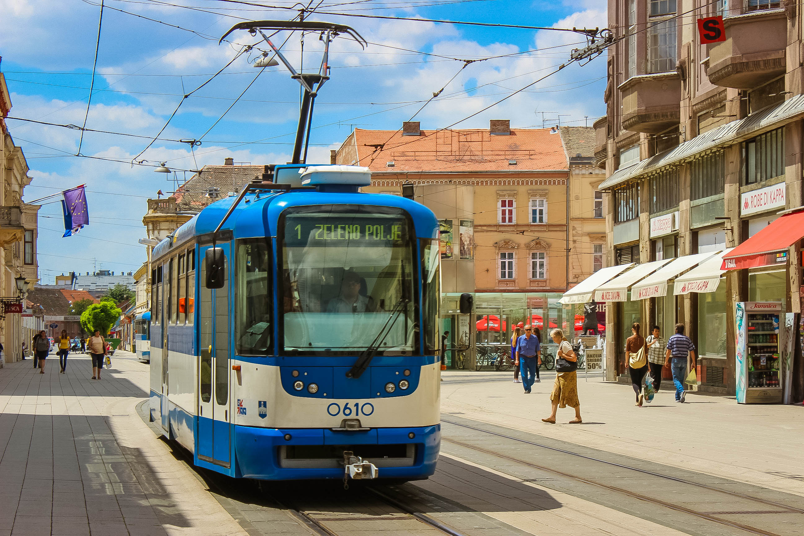
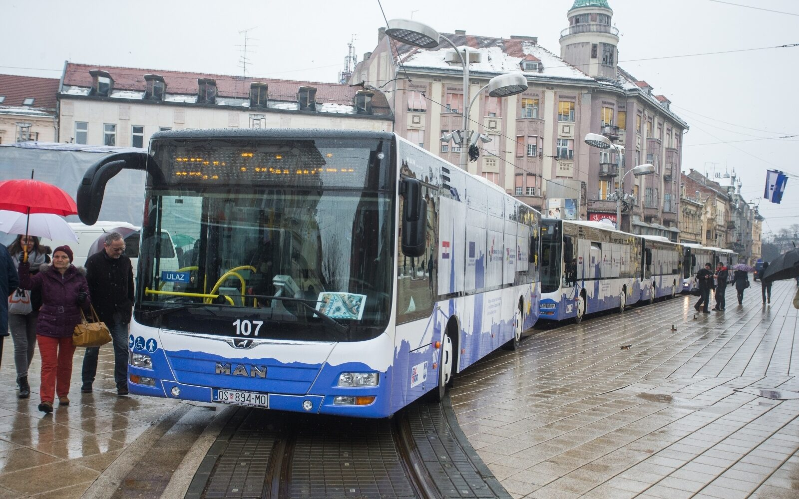

Transportation in Osijek

Tram
2 tram lines go through the city at all times.

Bus
More than 10 bus lines go through the city at all times.
 Taxi and Uber
Taxi and Uber
Hunderds of taxists and uber drivers ready at all times.